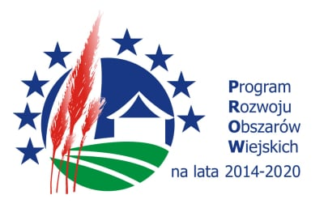

Działanie 16 "Współpraca" objęte Programem Rozwoju Obszarów Wiejskich na lata 2014–2020
Tytuł operacji: Współpraca na rzecz innowacji związanej z tworzeniem krótkich łańcuchów dostaw.
Numer umowy o przyznaniu pomocy: 00127.DDD.6509.00007.2022.06
Tytuł operacji: Współpraca na rzecz innowacji związanej z tworzeniem krótkich łańcuchów dostaw
Lider: Lidia Moroń-Morawska, ul. Dębowa 73, 32-095 Narama
Skład grupy operacyjnej:
- 10 rolników
- 1 właściciel lasu
- 1 przedsiębiorca MŚP
- 1 podmiot doradczy
- 1 jednostka naukowa
Słowa kluczowe umożliwiające identyfikację przedmiotu operacji: jakość/przetwórstwo żywności i odżywianie
Okres realizacji operacji: 11.10.2023-30.12.2024
Źródła finansowania operacji: środki EFRROW 63,63% przyznanej pomocy; krajowe środki publiczne 36,37% przyznanej pomocy
Całkowity budżet operacji: 983790,12 PLN
Główna lokalizacja realizacji operacji (NUTS3): Krakowski
Cel operacji:
Opracowanie i wdrożenie innowacji w zakresie tworzenia krótkiego łańcucha dostaw wraz z innowacjami dotyczącymi nowego produktu, technologii, zarządzania i marketingu w grupie operacyjnej.
Opis działań podejmowanych w ramach operacji:
[PL]
Głównym celem jest stworzenie i wdrożenie innowacyjnego krótkiego łańcucha dostaw poprzez współpracę między podmiotami. Zadania to opracowanie nowego produktu - miodu o podwyższonej lepkości oraz związanej z nim technologii i metod. Oczekiwane rezultaty to wzrost konkurencyjności w segmencie rynku miodu i poprawa rentowności gospodarstw.
[EN]
The main objective is to design and implement an innovative short supply chain through collaboration between entities. Tasks include developing a new product - honey with increased viscosity, and related technology and methods. Expected outcomes are increased market competitiveness in the honey segment and enhanced profitability of farms.
Opis kontekstu operacji:
[PL]
Pandemia COVID-19 oraz konflikt na Ukrainie podkreśliły kruchość łańcuchów dostaw, w tym żywnościowych. Stabilizacja tych łańcuchów wymaga ich skrócenia, co zwiększa ich odporność na przerwy i gwarantuje ciągłość dostaw. Naukowe publikacje wskazują na potrzebę tworzenia lokalnych, krótkich łańcuchów dostaw. Współczesny klient pragnie bezpośredniego kontaktu z producentem żywności, dążąc do zrozumienia źródła i jakości produktu. W odpowiedzi, "Małopolska Grupa Producentów Żywności" dąży do innowacji w zakresie tworzenia krótkich łańcuchów dostaw, w tym wprowadzenia Indywidualnego Kodu Produktu. Istotnym aspektem jest też redukcja śladu węglowego, promując ekologiczne i klimatyczne korzyści.
[EN]
The COVID-19 pandemic and the conflict in Ukraine highlighted the fragility of supply chains, including food ones. Their stabilization requires shortening, which enhances resilience and ensures continuity. Scientific publications point to the need for local, short supply chains. Modern consumers desire direct contact with food producers, aiming to understand the product's origin and quality. In response, the "Małopolska Food Producers Group" seeks innovation in creating short supply chains, including the introduction of an Individual Product Code. A crucial aspect is also the reduction of the carbon footprint, promoting environmental and climate benefits.
Dodatkowe uwagi:
[PL]
Wprowadzenie innowacyjnych krótkich łańcuchów dostaw może napotkać wyzwania związane z adaptacją technologiczną i edukacją konsumentów. Istotnym czynnikiem sukcesu jest akceptacja przez konsumentów Indywidualnego Kodu Produktu i zrozumienie jego wartości. Należy również uwzględnić potencjalne trudności w standardyzacji procesów, które mogą wpłynąć na jednolitość jakości produktów. Dla przyszłości ważne jest monitorowanie śladu węglowego i ciągłe poszukiwanie metod jego redukcji. Sugerowane jest także przeprowadzenie badań nad wpływem lokalnych łańcuchów dostaw na gospodarkę lokalną oraz dalsze badania nad preferencjami konsumentów.
[EN]
Implementing innovative short supply chains may encounter challenges related to technological adaptation and consumer education. A key success factor is the acceptance of the Individual Product Code by consumers and understanding its value. Potential difficulties in standardizing processes, which can affect product quality consistency, should also be considered. For the future, it's crucial to monitor the carbon footprint and continually seek its reduction methods. It is also suggested to conduct research on the impact of local supply chains on the local economy and further studies on consumer preferences.
Główne korzyści, jakie będą wynikać z zastosowania poszczególnych lub wszystkich przewidywanych rezultatów operacji dla ich adresata:
[PL]
Dzięki planowanej operacji: Producenci żywności będą bliżej konsumentów, co pozwoli na wyeliminowanie zbędnych pośredników. Rolnicy zyskają na rentowności, co poprawi ich sytuację finansową. Klienci będą mieli dostęp do produktów wyższej jakości, które są bliżej źródła. Środowisko skorzysta dzięki zmniejszeniu śladu węglowego produktu. Będzie dostępny nowy produkt – miód o podwyższonej lepkości, który może być sprzedawany w podstawowej formie lub z dodatkami.
[EN]
Thanks to the planned operation: Food producers will be closer to consumers, eliminating unnecessary intermediaries. Farmers will benefit from increased profitability, improving their financial situation. Customers will have access to higher-quality products that are closer to the source. The environment will benefit from a reduced carbon footprint of the product. A new product will be available - honey with increased viscosity, which can be sold in its basic form or with additives.
Streszczenie praktyki na temat końcowych lub oczekiwanych wyników:
[PL]
Planowana operacja ma na celu tworzenie krótkich łańcuchów dostaw produktów żywnościowych z udziałem rolników. Główną korzyścią dla producentów będzie zbliżenie do konsumenta, co pozwoli zredukować pośredników i zwiększyć rentowność gospodarstw. Dodatkowo, dla rolników zostanie stworzony budynek przeznaczony na pracownię pasieczną oraz rozlewnię miodu, co umożliwi produkcję innowacyjnego miodu o podwyższonej lepkości. Ten nowy produkt może przynieść dodatkowe zyski, oferowany w podstawowej formie lub z dodatkami. Inwestycja ta ma nie tylko korzyści ekonomiczne, ale także pozytywny wpływ na środowisko poprzez zmniejszenie śladu węglowego.
[EN]
The planned operation aims to create short supply chains for food products involving farmers. The main benefit for producers will be getting closer to the consumer, reducing intermediaries and increasing farm profitability. Additionally, a facility designated for beekeeping and honey dispensing will be built for farmers, enabling the production of innovative, high-viscosity honey. This new product can bring additional profits, either sold in its basic form or with additives. This investment not only provides economic benefits but also positively impacts the environment by reducing the carbon footprint.

Landing Page Software